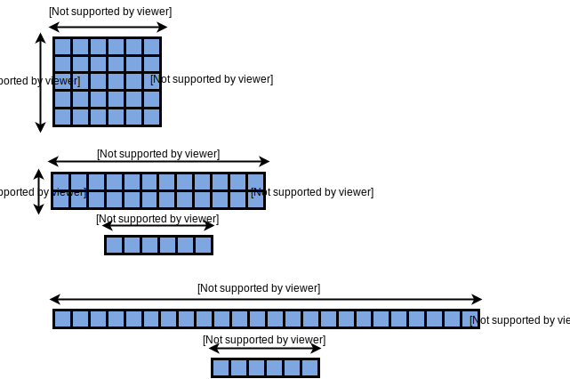
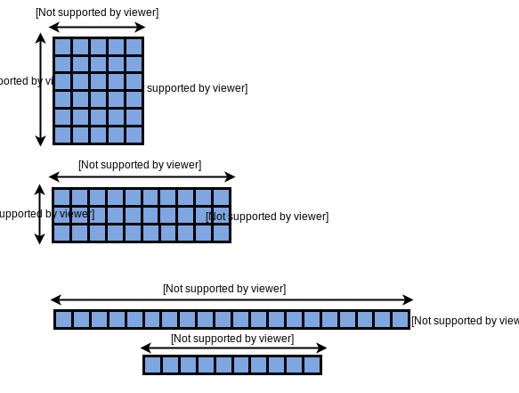

The Russian Peasant Multiplication is an ancient technique for multiply two integers. Its algorithm is very interesting and allows to compute the multiplication only with sums, shift left and shift right operations.
As an example to illustrate how Peasant works, let's multiply 5 by 6. To do this, we will put the numbers in two columns and then we divide by two the number of the first column until it reaches 1. At the same time, we multiply by two the number of the second column. The result of the multiplication is the sum of the numbers of the second column when the numbers of the first column are odd. Try it again for 6x5 and the result will be the same!
Peasant multiplication example:5x6 and 6x5{kind=link}
Why does it work?
The product of two integer numbers can be expressed according to the equation (1):
Equation (1){kind=link}
Returning to the example of multiply 5 by 6, let's call a=5 and b=6. In the first iteration of the algorithm, a is odd and b is added to the multiplication result. In each step the value of a is divided by 2 and b is multiplied by 2. This occurs until a reaches the value 1.
In the second iteration, a=2 and b=12, and since a is an even number it is not added to the multiplication result. Finally, in the third iteration a=1 and the value of b=24 is added to the result of the product, which is 30 and the algorithm stops.
 Peasant multiplication: 5x6{kind=link}
Note through the figure bellow that the process of multiplying by 6 and 5 is very similar. It is important to see that the algorithm has log2(a) iterations and swapping a by b if a > b optimizes the calculation of the Peasant.
 Peasant multiplication: 6X5{kind=link}
The peasant algorithm is illustrated in the figure below. To check if a binary number is odd just make sure the least significant bit is 1, otherwise, if it is 0, the number is even. Thus, the expression C=C+A&B[0] accumulates the value of B only when A is an odd number.
Peasant multiplication algorithm{kind=link}
You want to practice? Check out the SystemVerilog implementation of Peasant module and its testbench:
module peasant #(parameter NBITS = 20) (input logic [NBITS-1:0] A,B, input logic clock, reset, oReady, iValid, output logic iReady, oValid, output logic [NBITS+NBITS-1:0]result); enum logic [1:0] {INIT, CALC, SEND} state; logic [NBITS+NBITS-1:0] A_aux, B_aux; always_ff @(posedge clock)begin if(reset)begin A_aux <= '0; B_aux <= '0; result <= '0; state <= INIT; iReady <= 0; oValid <= 0; end else begin case(state) INIT: begin iReady <= 1; oValid <= 0; A_aux <= A; B_aux <= B; state <= CALC; end CALC: begin if(A_aux >= 1)begin A_aux <= (A_aux >>> 1); B_aux <= (B_aux <<< 1); result <= result + (A_aux[0] ? B_aux : 0); end else begin state <= SEND; oValid <= 1; end end SEND: begin if(oReady)begin oValid <= 0; state <= INIT; end else state <= SEND; end endcase end end endmodule
`include "peasant.sv" parameter NBITS = 8; module top; logic clock, reset; logic [NBITS-1:0] A,B; logic [NBITS+NBITS-1:0]result; logic iReady, iValid, oReady, oValid; enum logic {S1, S2} state; initial begin clock = 0; reset = 1; #20 reset = 0; end always #5 clock = !clock; peasant #(NBITS) mult(.*); always_ff @(posedge clock)begin if(reset)begin iValid <= 0; oReady <= 0; state <= S1; end else case(state) S1: begin A = 8'd12; B = 8'd11; iValid <= 1; oReady <= 1; if(iReady) state <= S2; end S2: begin if(oValid)begin $display(A,B,result); $finish(); end end endcase end endmodule
Also available in GitHub.